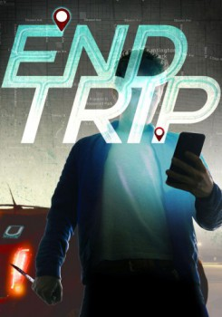

País:Estados Unidos, 85 minutos.
Idiomas:
GénerosTerror, Suspenso
Director/es:Aaron Jay Rome
Guionistas:Aaron Jay Rome
Códec de vídeo:Unknown
Número: 85


Certificación:
Argumento:
On a calm night in an average city a hardworking URYDE driver, Brandon, picks up just another fare, Judd. Using interactions that blur the lines between the technological world and the physical one, Judd explains a messy breakup. Brandon offers an empathetic ear and a sympathetic heart to his new friend to help him pick up the pieces. Aggregated profiles, algorithms, links, likes and comments bring people closer. But how close is too close?
Reparto

Medio: Archivo de video,
Localización: D:\Multimedia\Películas\El ultimo viaje (2018)\El ultimo viaje (2018).mkv
Prestado: No
Rel. aspecto: Unknown